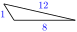
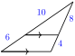
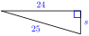

From geometry we know that the sum of the angles in a triangle is 180. Are there any relationships between the angles of a triangle and its sides?
First of all, you have probably observed that the longest side in a triangle is always opposite the largest angle, and the shortest side is opposite the smallest angle, as illustrated below.
Note2.1.
It is usual to label the angles of a triangle with capital letters, and the side opposite each angle with the corresponding lower-case letter, as shown at right. We will follow this practice unless indicated otherwise.
Example2.2.
In \(\triangle FGH, \angle F=48\degree,\) and \(\angle G\) is obtuse. Side \(f\) is 6 feet long. What can you conclude about the other sides?
Solution.
Because \(\angle G\) is greater than \(90\degree\text{,}\) we know that \(\angle F +\angle G\) is greater than \(90\degree + 48\degree = 138\degree\text{,}\) so \(\angle F\) is less than \(180\degree-138\degree = 42\degree.\)
Thus, \(\angle H \lt \angle F \lt \angle G,\) and consequently \(h \lt f \lt g\text{.}\)
We can conclude that \(h \lt 6\) feet long, and \(g \gt 6\) feet long.
Checkpoint2.3.
In isosceles triangle \(\triangle RST\text{,}\) the vertex angle \(\angle S = 72\degree\text{.}\) Which side is longer, \(s\) or \(t\text{?}\)
Answer.
\(s\) is longer
SubsectionThe Triangle Inequality
It is also true that the sum of the lengths of any two sides of a triangle must be greater than the third side, or else the two sides will not meet to form a triangle. This fact is called the triangle inequality.
Triangle Inequality.
In any triangle, we must have that
\begin{equation*}
p+q \gt r
\end{equation*}
where \(p, q, \text{and}~ r\) are the lengths of the sides of the triangle.
We cannot use the triangle inequality to find the exact lengths of the sides of a triangle, but when two sides are known, the triangle inequality allows us to find upper and lower bounds for the length of the third side.
Example2.4.
Two sides of a triangle have lengths 7 inches and 10 inches, as shown at right. What can you say about the length of the third side?
Solution.
We let \(x\) represent the length of the third side of the triangle. By looking at each side in turn, we can apply the triangle inequality three different ways, to get
We already know that \(x \gt -3\) because \(x\) must be positive, but the other two inequalities do give us new information. The third side must be greater than 3 inches but less than 17 inches long.
Checkpoint2.5.
Can you make a triangle with three wooden sticks of lengths 14 feet, 26 feet, and 10 feet? Sketch a picture, and explain why or why not.
Answer.
No, \(10+14\) is not greater than 26.
SubsectionRight Triangles: The Pythagorean Theorem
In Chapter 1 we used the Pythagorean theorem to derive the distance formula. We can also use the Pythagorean theorem to find one side of a right triangle if we know the other two sides.
Pythagorean Theorem.
In a right triangle, if \(c\) stands for the length of the hypotenuse, and the lengths of the two legs are denoted by \(a\) and \(b\text{,}\) then
A 25-foot ladder is placed against a wall so that its foot is 7 feet from the base of the wall. How far up the wall does the ladder reach?
Solution.
We make a sketch of the situation, as shown below, and label any known dimensions. Well call the unknown height \(h\text{.}\)
The ladder forms the hypotenuse of a right triangle, so we can apply the Pythagorean theorem, substituting 25 for \(c\text{,}\) 7 for \(b\text{,}\) and \(h\) for \(a\text{.}\)
\begin{align*}
h^2 + 49 \amp = 625 \amp\amp \blert{\text{Subtract 49 from both sides.}}\\
h^2 \amp = 576 \amp\amp \blert{\text{Extract roots.}}\\
h \amp = \pm \sqrt{576} \amp\amp \blert{\text{Simplify the radical.}}\\
h \amp = \pm 24
\end{align*}
The height must be a positive number, so the solution \(-24\) does not make sense for this problem. The ladder reaches 24 feet up the wall.
Checkpoint2.7.
A baseball diamond is a square whose sides are 90 feet long. The catcher at home plate sees a runner on first trying to steal second base, and throws the ball to the second-baseman. Find the straight-line distance from home plate to second base.
Answer.
\(90\sqrt{2} \approx 127.3\) feet
Note2.8.
Keep in mind that the Pythagorean theorem is true only for right triangles, so the converse of the theorem is also true. In other words, if the sides of a triangle satisfy the relationship \(a^2 + b^2 = c^2\text{,}\) then the triangle must be a right triangle. We can use this fact to test whether or not a given triangle has a right angle.
Example2.9.
Delbert is paving a patio in his back yard, and would like to know if the corner at \(C\) is a right angle.
He measures 20 cm along one side from the corner, and 48 cm along the other side, placing pegs \(P\) and \(Q\) at each position, as shown at right. The line joining those two pegs is 52 cm long. Is the corner a right angle?
Solution.
If is a right triangle, then its sides must satisfy \(p^2 + q^2 = c^2\text{.}\) We find
Yes, because \(p^2 + q^2 = c^2\text{,}\) the corner at \(C\) is a right angle.
Checkpoint2.10.
The sides of a triangle measure 15 inches, 25 inches, and 30 inches long. Is the triangle a right triangle?
Answer.
No
The Pythagorean theorem relates the sides of right triangles. However, for information about the sides of other triangles, the best we can do (without trigonometry!) is the triangle inequality. Nor does the Pythagorean theorem help us find the angles in a triangle. In the next section we discover relationships between the angles and the sides of a right triangle.
Review the following skills you will need for this section.
Algebra Refresher2.2.
Solve the inequality.
1. \(\:6-x \gt 3\)
2. \(\:\dfrac{-3x}{4} \ge -6\)
3. \(\:3x-7 \le -10\)
4. \(\:4-3x \lt 2x+9\)
If \(x \lt 0\text{,}\) which of the following expressions are positive, and which are negative?
5. \(\:-x\)
6. \(\:-(-x)\)
7. \(\:\abs{x}\)
8. \(\:-\abs{x}\)
9. \(\:-\abs{-x}\)
10. \(\:x^{-1}\)
\(\underline{\qquad\qquad\qquad\qquad}\)
Algebra Refresher Answers
\(\displaystyle \:x \lt 3\)
\(\displaystyle \:x \le 8\)
\(\displaystyle \:x \le -1\)
\(\displaystyle \:x \gt -1\)
Positive
Negative
Positive
Negative
Negative
Negative
SubsectionSection 2.1 Summary
SubsubsectionVocabulary
Converse
Extraction of roots
Inequality
SubsubsectionConcepts
The longest side in a triangle is opposite the largest angle, and the shortest side is opposite the smallest angle.
Triangle Inequality: In any triangle, the sum of the lengths of any two sides is greater than the length of the third side.
Pythagorean Theorem: In a right triangle with hypotenuse \(c,~~ a^2 +b^2 = c^2\text{.}\)
If the sides of a triangle satisfy the relationship \(~a^2 +b^2 = c^2~\text{,}\) then the triangle is a right triangle.
SubsubsectionStudy Questions
Is it always true that the hypotenuse is the longest side in a right triangle? Why or why not?
In \(\triangle DEF\text{,}\) is it possible that \(~d+e\gt f~\) and \(~e+f\gt d~\) are both true? Explain your answer.
In a right triangle with hypotenuse \(c\text{,}\) we know that \(~a^2 +b^2 = c^2~\text{.}\) Is it also true that \(~a + b = c~\text{?}\) Why or why not?
The two shorter sides of an obtuse triangle are 3 in and 4 in. What are the possible lengths for the third side?
SubsubsectionSkills
Identify inconsistencies in figures #1-12
Use the triangle inequality to put bounds on the lengths of sides #13-16
Use the Pythagorean theorem to find the sides of a right triangle #17-26
Use the Pythagorean theorem to identify right triangles #27-32
Solve problems using the Pythagorean theorem #33-42
ExercisesHomework 2.1
Exercise Group.
For Problems 112, explain why the measurements shown cannot be accurate.
1.
2.
3.
4.
5.
6.

7.
8.
9.
10.
11.
12.

13.
If two sides of a triangle are 6 feet and 10 feet long, what are the largest and smallest possible values for the length of the third side?
14.
Two adjacent sides of a parallelogram are 3 cm and 4 cm long. What are the largest and smallest possible values for the length of the diagonal?
15.
If one of the equal sides of an isosceles triangle is 8 millimeters long, what are the largest and smallest possible values for the length of the base?
16.
The town of Madison is 15 miles from Newton, and 20 miles from Lewis. What are the possible values for the distance from Lewis to Newton?
Exercise Group.
For Problems 1722,
Make a sketch of the situation described, and label a right triangle.
Use the Pythagorean Theorem to solve each problem.
17.
The size of a TV screen is the length of its diagonal. If the width of a 35-inch TV screen is 28 inches, what is its height?
18.
If a 30-meter pine tree casts a shadow of 30 meters, how far is the tip of the shadow from the top of the tree?
19.
The diagonal of a square is 12 inches long. How long is the side of the square?
20.
The length of a rectangle is twice its width, and its diagonal is meters long. Find the dimensions of the rectangle.
21.
What size rectangle can be inscribed in a circle of radius 30 feet if the length of the rectangle must be three times its width?
22.
What size square can be inscribed inside a circle of radius 8 inches, so that its vertices just touch the circle?
Exercise Group.
For Problems 2326, find the unknown side of the triangle.
23.
24.
25.
26.

Exercise Group.
For Problems 2732, decide whether a triangle with the given sides is a right triangle.
27.
9 in, 16 in, 25 in
28.
12 m, 16 m, 20 m
29.
5 m, 12 m, 13 m
30.
5 ft, 8 ft, 13 ft
31.
\(5^2\) ft, \(8^2\) ft, \(13^2\) ft
32.
\(\sqrt{5}\) ft, \(\sqrt{8}\) ft, \(\sqrt{13}\) ft
33.
Show that the triangle with vertices \((0,0)\text{,}\)\((6,0)\) and \((3,3)\) is an isosceles right triangle, that is, a right triangle with two sides of the same length.
34.
Two opposite vertices of a square are \(A(-9,-5)\) and \(C(3,3)\text{.}\)
Find the length of a diagonal of the square.
Find the length of the side of the square.
35.
A 24-foot flagpole is being raised by a rope and pulley, as shown in the figure. The loose end of the rope can be secured to a ring on the ground 7 feet from the base of the pole. From the ring to the top of the pulley, how long should the rope be when the flagpole is vertical?
36.
To check whether the corners of a frame are square, carpenters sometimes measure the sides of a triangle, with two sides meeting at the join of the boards. Is the corner shown in the figure square?
Exercise Group.
37.
Find \(\alpha, \beta\) and \(h\text{.}\)
38.
Find \(\alpha, \beta\) and \(d\text{.}\)
39.
Find the diagonal of a cube of side 8 inches. Hint: Find the diagonal of the base first.
40.
Find the diagonal of a rectangular box whose sides are 6 cm by 8 cm by 10 cm. Hint: Find the diagonal of the base first.
Exercise Group.
For Problems 41 and 42, make a sketch and solve.
41.
The back of Brians pickup truck is five feet wide and seven feet long. He wants to bring home a 9-foot length of copper pipe. Will it lie flat on the floor of the truck?
The shell on the pickup is 3 feet tall. Will a 9-foot copper pipe fit diagonally across the back of the truck?
42.
What is the longest curtain rod that will fit inside a box 60 inches long by 10 inches wide by 4 inches tall?
43.
In this problem, well show that any angle inscribed in a semi-circle must be a right angle. The figure shows a triangle inscribed in a unit circle, one side lying on the diameter of the circle and the opposite vertex at point \((p,q)\) on the circle.
What are the coordinates of the other two vertices of the triangle? What is the length of the side joining those vertices?
Use the distance formula to compute the lengths of the other two sides of the triangle.
Show that the sides of the triangle satisfy the Pythagorean theorem, \(a^2 + b^2 = c^2\text{.}\)
44.
There are many proofs of the Pythagorean theorem. Here is a simple visual argument.
What is the length of the side of the large square in the figure? Write an expression for its area.
Write another expression for the area of the large square by adding the areas of the four right triangles and the smaller central square.
Equate your two expressions for the area of the large square, and deduce the Pythagorean theorem.